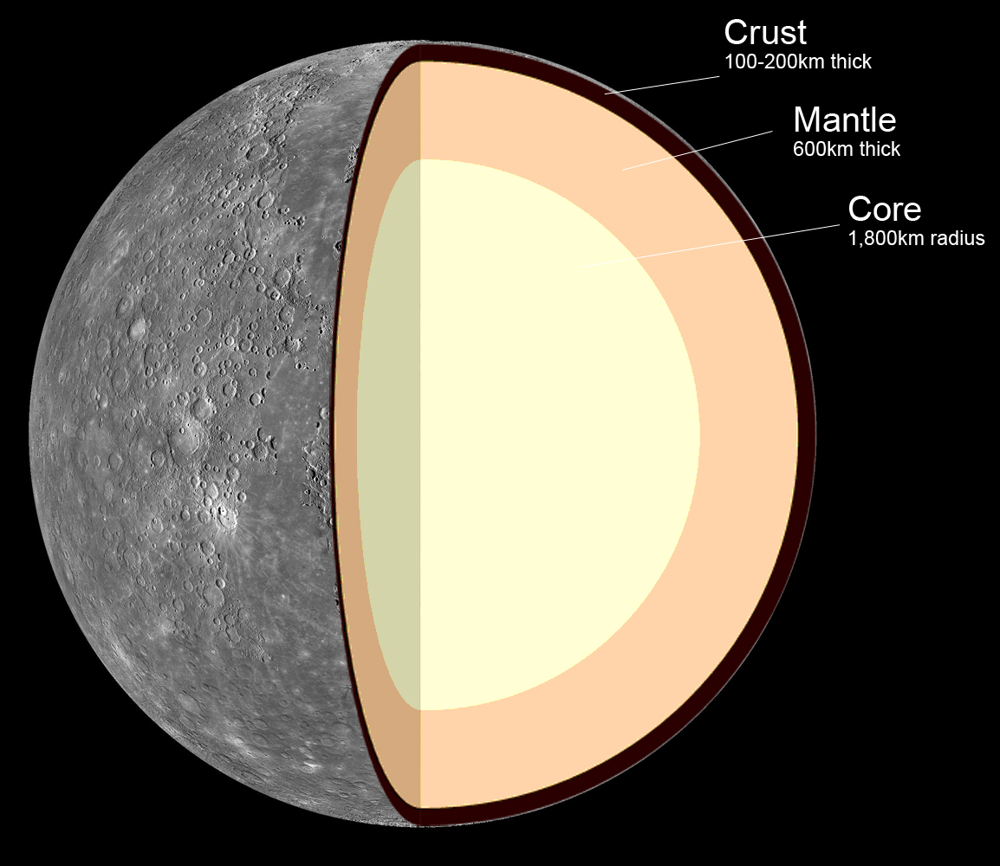
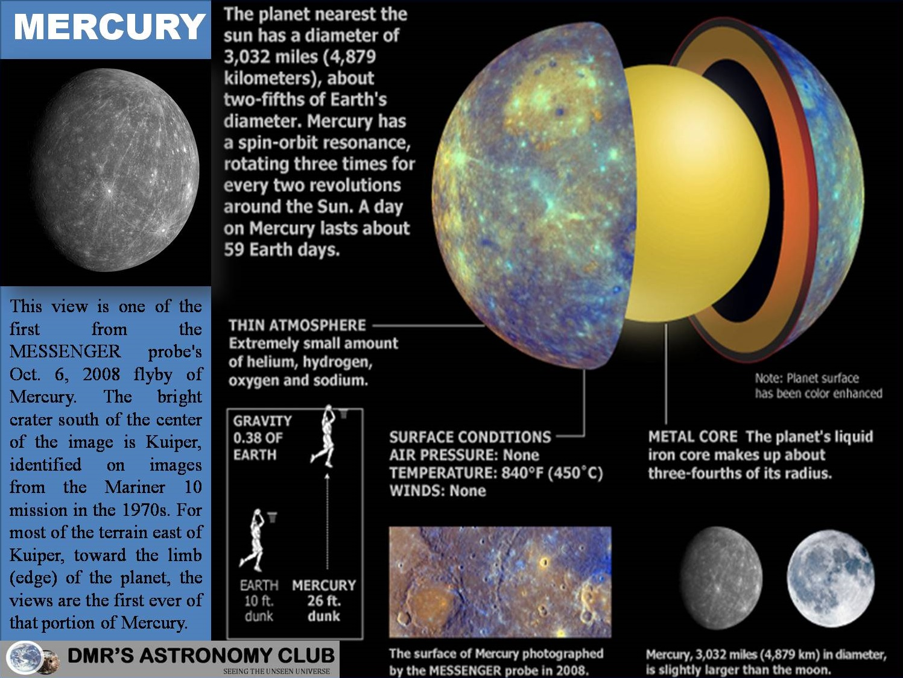

Mercury is the smallest planet in the Solar System and the one closest to the Sun, with an orbital period of about 88 Earth days, which is much faster than any other planet in the Solar System. Seen from Earth, it appears to move around its orbit in about 116 days. It has no known natural satellites. It is named after the Roman deity Mercury, the messenger to the gods.
Mercury is tidally or gravitationally locked with the Sun in a 3:2 resonance, and rotates in a way that is unique in the Solar System. As seen relative to the fixed stars, it rotates on its axis exactly three times for every two revolutions it makes around the Sun. As seen from the Sun, in a frame of reference that rotates with the orbital motion, it appears to rotate only once every two Mercurian years.
Because Mercury orbits the Sun within Earth's orbit (as does Venus), it can appear in Earth's sky in the morning or the evening, but not in the middle of the night. Also, like Venus and the Moon, it displays a complete range of phases as it moves around its orbit relative to Earth. Although Mercury can appear as a bright object when viewed from Earth, its proximity to the Sun makes it more difficult to see than Venus. Two spacecraft have visited Mercury: Mariner 10 flew by in the 1970s; and MESSENGER, launched in 2004, orbited Mercury over 4,000 times in four years, before exhausting its fuel and crashing into the planet's surface on April 30, 2015
Internal Structure

Mercury is one of four terrestrial planets in the Solar System, and is a rocky body like Earth. It is the smallest planet in the Solar System, with an equatorial radius of 2,439.7 kilometres (1,516.0 mi). Mercury is also smaller-albeit more massive-than the largest natural satellites in the Solar System, Ganymede and Titan. Mercury consists of approximately 70% metallic and 30% silicate material. Mercury's density is the second highest in the Solar System at 5.427 g/cm3, only slightly less than Earth's density of 5.515 g/cm3. If the effect of gravitational compression were to be factored out, the materials of which Mercury is made would be denser, with an uncompressed density of 5.3 g/cm3 versus Earth's 4.4 g/cm3.
Geologists estimate that Mercury's core occupies about 42% of its volume; for Earth this proportion is 17%. Research published in 2007 suggests that Mercury has a molten core. Surrounding the core is a 500-700 km mantle consisting of silicates. Based on data from the Mariner 10 mission and Earth-based observation, Mercury's crust is estimated to be 100-300 km thick. One distinctive feature of Mercury's surface is the presence of numerous narrow ridges, extending up to several hundred kilometers in length. It is thought that these were formed as Mercury's core and mantle cooled and contracted at a time when the crust had already solidified.
Mercury's core has a higher iron content than that of any other major planet in the Solar System, and several theories have been proposed to explain this. The most widely accepted theory is that Mercury originally had a metal-silicate ratio similar to common chondrite meteorites, thought to be typical of the Solar System's rocky matter, and a mass approximately 2.25 times its current mass. Early in the Solar System's history, Mercury may have been struck by a planetesimal of approximately 1/6 that mass and several thousand kilometers across. The impact would have stripped away much of the original crust and mantle, leaving the core behind as a relatively major component. A similar process, known as the giant impact hypothesis, has been proposed to explain the formation of the Moon.